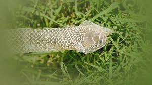
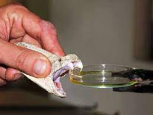

İlanlar (Serpentes)
-Sürünənlər Sinfinin Pulcuqlular Dəstəsinə Aid Yarımdəstə.
İlanlar elastik çənə quruluşuna sahibdir. Bununla da böyük canlıları uda bilirlər. İlanların çoxu zəhərsizdir. Zəhərsiz ilan növləri ovlarına dolanaraq onları boğur. İlanların zəhərli növləri isə zəhərdən ovlanmaq, yaxud özlərini qorumaq məqsədi ilə istifadə edirlər. İlanlar həşərat, qurbağa, quş, balıq, kartankala, siçan, yumurta və s ilə qidalanır. İlanları öyrənən elm serpantologiya adlanır.
İlan darisi pulcuqlarla örtülüdür, hamar va quru quruluşa malikdir. ilanların qarın va bel pulcuqlarınin qurulușu fərqlidir. Dari ranglari çox müxtəlidir. Baziləri bir rəngə, bəziləri isə 3-4 rəngə sahibdir. Rangli ilanlar, əsasən, zəhərlidir. Ancaq zəhərli olmayan rəngli ilanlar da var. Rəngli dəri təhlükəli bildirir va düşmənləri qorxutmaq üçün istifədə olunur, amma bu o demək deyil ki, birrəngli ilanların dəriləri qorunmaq üçün əlverişsizdir. Birrəngli ilanların rəngi daha çox bozumtul, qəhvəyi va qara rəngli olur ki, bu ranglər da torpaqda, qumda, dașda gizlənmək üçün (kamuflyaj) ideal rənglərdir.
Dəri dəyişdirmə
Bir çox canl kimi ilanlar da dari dayişdirir. Köhna dəri ağız tarafdan cırır, ilan daș, ağac kimi obyektlara sürtünərak dərisini çixardır. Bu prosesin bir neça funksiyası var. İlk növbada ilan köhna daridən azad olur, ham da parazitlərdən təmizlənir
Zəhər başın arxasındakı zəhər vəzilərində toplanır va dişlər vəsitəsilə ova, yaxud düşmənə yeridilir. Tüpürən kobra kimi bir neçə ilan təhlükə hiss etdikdə düşmənin gözünə zəhər tüpürür. Bəzi heyvanlarda ilan zəhərinə qarşı təbii peyvənd vardır va zəhər onlara təsir etmir.
